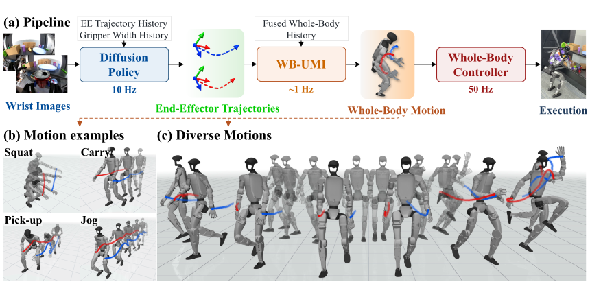
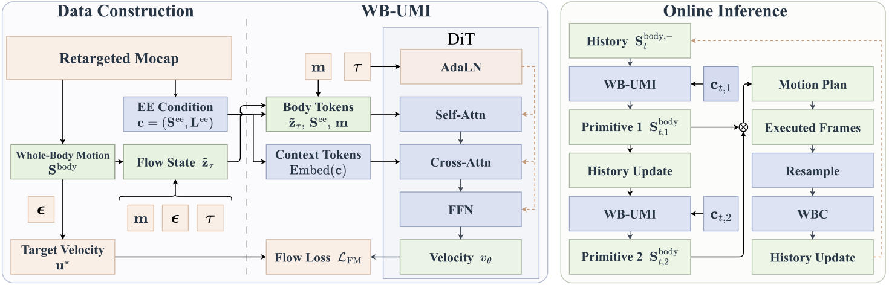

Diffusion policy
Wrist RGB observations and proprioceptive history produce bimanual EE trajectories and gripper commands. Relative predictions are anchored to the hand pose at the source observation.
Native UMI demonstrations capture task intent through wrist-camera images and end-effector (EE) trajectories, but leave humanoid posture, balance, and foot placement unspecified. Collecting task-specific whole-body demonstrations adds instrumentation and limits scalability.
Whole-Body UMI (WB-UMI) decouples task learning from whole-body coordination through a shared EE interface. A diffusion policy learns manipulation skills from native UMI demonstrations; a task-agnostic motion generator learns independently from retargeted motion capture. Together with a whole-body controller, they enable closed-loop humanoid manipulation without body trackers or task-specific paired image–whole-body demonstrations.
 Open full-size SVG
Open full-size SVG
A diffusion policy, WB-UMI motion generator, and SONIC controller run asynchronously with latency compensation and measured-state feedback.

Open full-size SVGWrist RGB observations and proprioceptive history produce bimanual EE trajectories and gripper commands. Relative predictions are anchored to the hand pose at the source observation.
A masked flow-matching generator combines EE targets with whole-body history to generate two motion primitives. The second provides a preview for subsequent execution.
The pretrained SONIC controller tracks the generated reference. Measured joints and base tilt update the next planning history; incoming references are trimmed and blended to compensate for latency.
WB-UMI learns whole-body coordination from retargeted G1 motion capture, using EE trajectories extracted by forward kinematics as conditioning.

Open full-size SVGEach motion primitive uses eight history frames and predicts 32 future frames at 30 Hz. Two autoregressive primitives form a motion segment. Sparse EE look-ahead extends 32 frames beyond the current primitive, sampled every four frames, to communicate future motion intent.
A conditional diffusion transformer is trained with masked flow matching and samples each primitive in eight ODE steps. The motion dataset contains approximately 105 hours: 90 for training, five for validation, and ten for testing, with no semantic action group shared across splits.
Motion generation. On unseen action categories, EE look-ahead reduces position error from 5.77 cm to 4.25 cm.
Closed-loop execution. In simulated shelf pick-and-place, measured-state feedback reduces EE orientation error from 6.76° to 4.97°. WB-UMI runs at 104 ms mean inference latency on an RTX 4090.
Whole-body motion generated from end-effector trajectories.
Each task uses 200 native UMI demonstrations collected in approximately 90 minutes. We evaluate ten trials per task on the 29-DoF G1; success requires task completion while remaining upright and balanced.
Reach the handle and fully close the drawer through coordinated reaching and body lowering.
Move a bottle from the lower shelf to the upper shelf and place it stably without dropping it.
Release a ball into the target basket through dynamic whole-body coordination.
Walk to the table, grasp a bottle, and place it at the target location without dropping it.
Limitations. Ball toss remains sensitive to gripper-release latency and prediction errors during fast hand motion. In Locomotion Pick-and-Place, execution drift can lead to unfamiliar visual observations and compound errors across planning, motion generation, and control.
@unpublished{nai2027wholebodyumi,
title = {Whole-Body UMI: Transferring UMI Manipulation Skills to Humanoid
Whole-Body Manipulation via Real-Time Motion Generation},
author = {Nai, Yuxuan and Chang, Leixin and Yang, Liangjing
and Yang, Shuo and Li, Zhongyu},
year = {2027},
note = {Manuscript submitted to ICRA 2027}
}